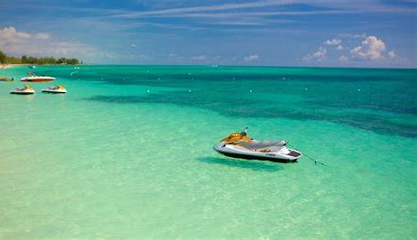

Home. George Town. Dunmore Town. Freeport. Grand Bahama. Blue Lagoon Island.
Freeport is a city, district and free trade zone on the island of Grand Bahama of the northwest part of The Bahamas. In 1955, Wallace Groves, a Virginian financier with lumber interests in Grand Bahama, was granted 20,000 hectares (50,000 acres) of pineyard with substantial areas of swamp and scrubland by the Bahamian government with a mandate to economically develop the area. Freeport has grown to become the second most populous city in The Bahamas.
Freeport, famous for its vibrant nature, beautiful beaches, and captivating sights to see, is a must-visit for all Bahamas visitors. It's a nature lovers paradise, surrounded by lush grass and tall palm trees as far as the eye can see.
